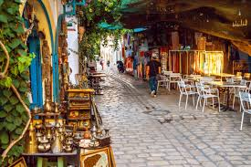
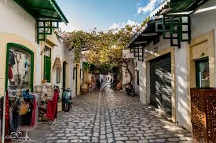
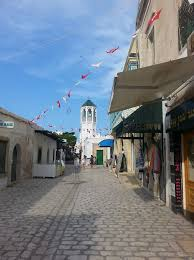
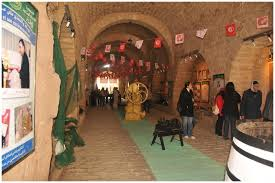
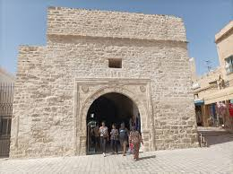
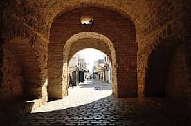
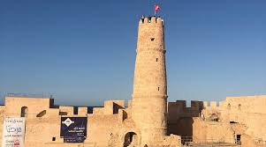
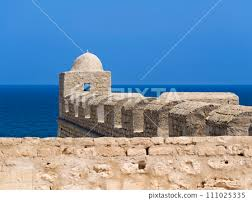
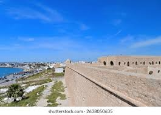

Mahdia
Entre traditions maritimes et charme authentique
À propos de Mahdia
Le gouvernorat de Mahdia est une région située sur le littoral Est au centre de la Tunisie. La ville de Mahdia, chef-lieu du gouvernorat, est construite sur une presqu'île, abritant l'un des premiers ports de pêche du pays et une activité touristique importante.
Emplacement
Mahdia est une ville côtière située à environ 200 kilomètres au sud de la capitale, Tunis. Son emplacement sur une presqu'île lui confère un climat tempéré sous l'influence des vents dominants de la mer Méditerranée.
Histoire
L'histoire de Mahdia remonte aux civilisations puniques et romaines. Son ère historique principale a débuté en 920 apr. J.-C., lorsque les Fatimides s'y sont installés et en ont fait la capitale de la dynastie fatimide. Sa position géographique en faisait une forteresse imprenable et un important centre commercial méditerranéen. La ville a ensuite été victime de divers raids, notamment des Hilaliens, des Croisés et des Espagnols, qui l'ont finalement détruite, lui faisant perdre son importance logistique et commerciale.
Caractéristiques
- Capitale de la Pêche et du Tourisme : La ville abrite l'un des premiers ports de pêche du pays, et le tourisme est également un pilier de son économie locale.
- Patrimoine Architectural : La ville est célèbre pour ses monuments historiques, notamment la Skifa el Kahla (une porte fortifiée du Xème siècle) et la Grande Mosquée, reconstruite en 1965 selon le plan ancien.
- Centre Tertiaire : Mahdia a développé un pôle d'enseignement supérieur, notamment avec l'Institut d'économie et de gestion.
Top Places à Visiter
1.La Médina de Mahdia
Promenez-vous dans la vieille ville pour découvrir l'atmosphère locale, les souks et les bâtiments historiques blanchis à la chaux.




2.Skifa El Kahla (Bab Zouina)
Cette imposante porte fortifiée du Xème siècle est l'entrée principale de la médina et l'un des rares vestiges des anciens remparts. Un accès au toit offre une vue panoramique sur la ville et la mer.



3.Borj el Kebir (Fort Ottoman)
Située sur le point le plus élevé de la presqu'île, cette forteresse du XVIe siècle offre des vues imprenables sur le port, le cimetière marin et la ville environnante.



- LAMPARO CAFE RESTO : Réputé pour son poisson frais et ses grillades, cet établissement offre un cadre agréable et un excellent service.
- Espadon Restaurant : Connu pour sa délicieuse cuisine de la mer et ses grandes portions, ainsi qu'une ambiance agréable.
- Neptune restaurant : Un lieu apprécié pour déguster des plats locaux comme le couscous.
- LAMPARO CAFE RESTO : En plus de ses qualités de restaurant, il est également un café prisé pour son excellent café et son ambiance chaleureuse dès l'aube.
- Café Sidi Salem La Grotte: Un café méditerranéen avec de bonnes critiques pour sa nourriture et sa vue.
- Cafe El Medina : Un lieu relaxant, idéal pour un brunch, situé dans la médina.